dais: A better way to present PDF slides
Introducing a new Rust-powered PDF presenter CLI with features including slide groups, drawing, blackouts, a whiteboard, zooming, and live text boxes with math support.
![]()
In an ideal world, everyone would just use PowerPoint. Since that doesn’t seem to be happening, this post introduces dais, a new PDF slide presentation tool. You get a PowerPoint-esque presenting feel with a speaker view, but use your Beamer (or Polylux) slides. The speaker view includes a preview of the next slide, making it easier for your talk to come across as well-rehearsed.

The goal of dais is to have a portable, truly configurable presenter tool. Most everything is configurable from keybindings to pointer styles. It’s feature rich, including:
- Draw on slides or use a freehand whiteboard
- Edit live text boxes with full math support
- Write speaker notes to yourself
- Track time spent on each slide
- Set a countdown timer
- Zoom into slides or spotlight a region
- Blackout or freeze the audience view while you navigate
- Jump to a specific slide by number
This is not the first PDF presenter tool. pdfpc is a popular choice, but does not work on Windows without WSL. pympress is also popular and works on Windows, but requires Python, so I won’t use it out of principle. dais is built in Rust so it’s fast and makes use of some very new and very cool tools, like Typst and hayro.1
Basic use
Open a PDF with:
dais presentation.pdfWith two monitors, dais opens a presenter console on your primary display and puts the audience view fullscreen on the secondary display. The console shows the current slide, a preview of the next, an editable notes panel, and a timer:
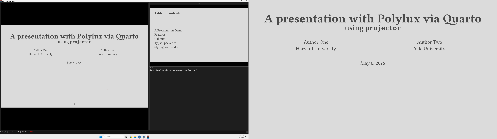
For single-monitor use, dais --single keeps everything in one window. Press F5F5 to toggle between the console and a full-screen HUD.
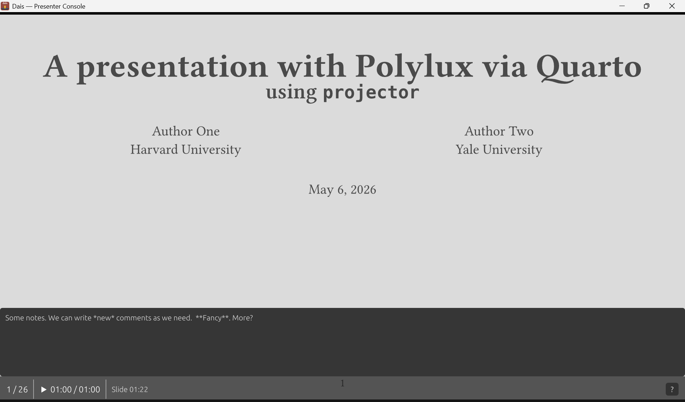
For Zoom or Teams, dais --screen-share makes the audience view a normal resizable window you can share. This allows you to screen share even on a single laptop screen, without showing your notes to the world.
Slide groups
Slides made with Beamer or Typst (see Polylux and Touying) create incremental animations by generating multiple PDF pages per logical slide. dais can ingest .pdfpc files to reconstruct groups automatically and convert them to dais’s format. The right arrow advances within a slide’s incremental steps before moving to the next logical slide. dais will display the step number alongside the slide number:
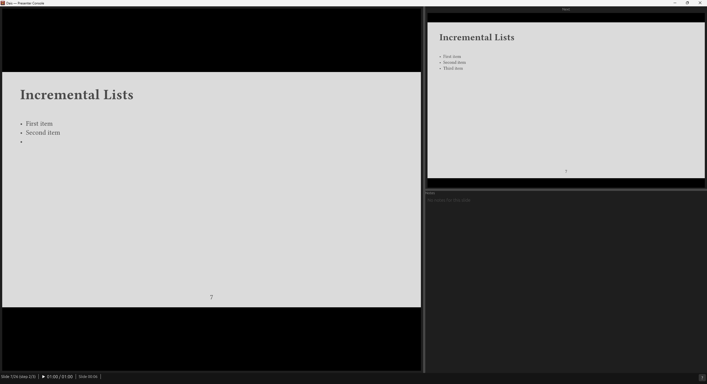
For PDFs without slides metadata or .pdfpc files, dais includes a grouping editor:
dais --edit slides.pdf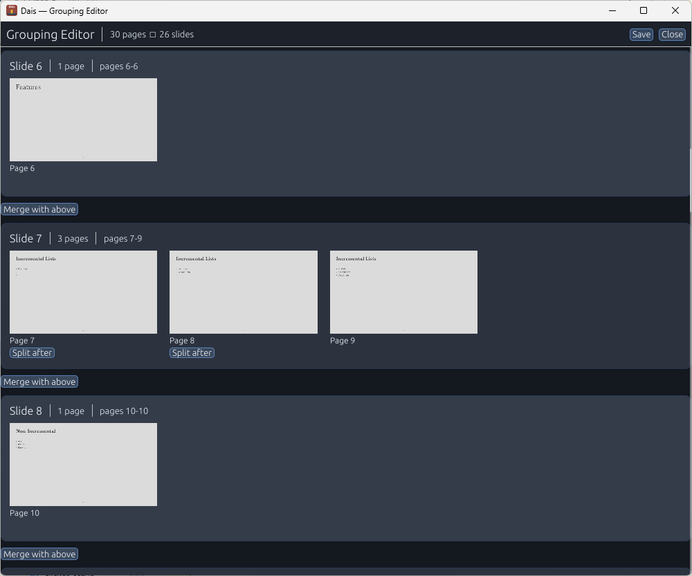
Slides on the same row are treated as incremental slides for counter and navigation purposes. Groups are saved to a .dais sidecar file next to the PDF.
Presentation tools
Spotlight
Press ss to draw a spotlight square around your cursor on the audience display.
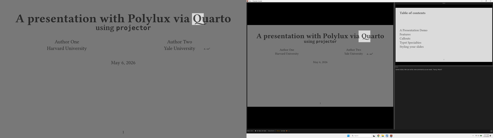
Zoom
Press zz to enter zoom mode. Scroll the mouse wheel to zoom in more:
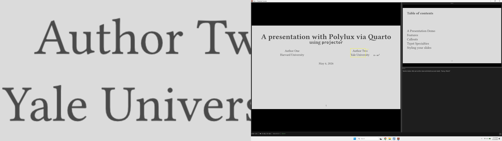
Laser pointer
Press ll to toggle the laser pointer. ctrl+lctrl+l cycles through seven styles: dot, minimal, crosshair, arrow, ring, bullseye, and highlight. The laser pointer is turned on by default when opening slides.
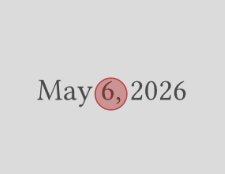
Freeze and blackout
Press ff to freeze the audience display on the current slide while you keep navigating the console. Press bb (or ..) to black out the audience entirely. Advancing past the last slide blacks out automatically.
Annotations
Drawing
Press dd to toggle freehand ink drawing. ctrl+dctrl+d cycles pen colors, shift+dshift+d cycles pen width, and cc clears the current slide’s ink.
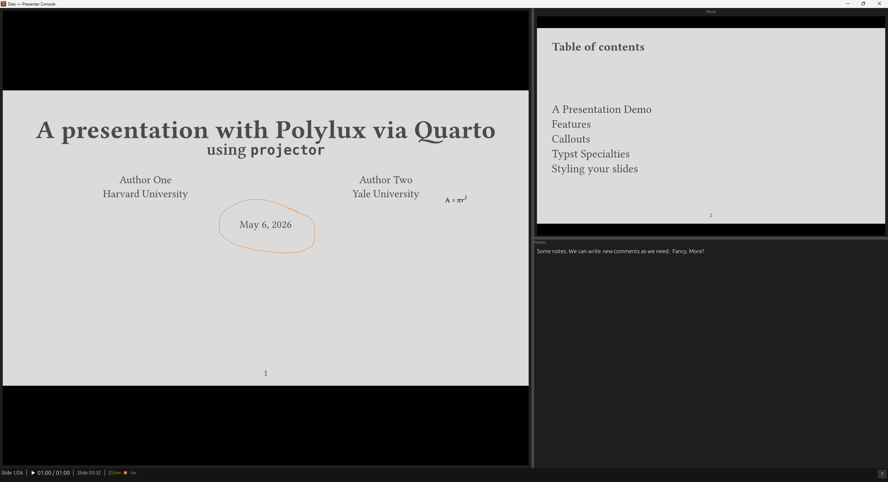
Text boxes
Press xx to enter text box placement mode, then click on the slide to place a box. Text boxes are rendered with Typst, so you get full math support. Typst is a better fit for this type of app because rendering is essentially instant and you never get an overfull hbox. The background is transparent, but can be configured to match your slide theme’s background color.
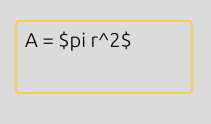
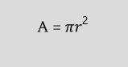
Whiteboard
Press ww to show a blank canvas on the audience display. The drawing mode activates automatically. Drawings on the whiteboard persist across slides and can be saved with ctrl+sctrl+s or cleared with cc.
Customizing dais
Configuration lives in a TOML file. You can place a dais.toml next to any PDF to override settings, like so:
[display]
audience_monitor = "Projector"
[timer]
mode = "countdown"
duration_minutes = 20
warning_minutes = 5All keybindings are remappable. The defaults follow expected conventions (pagedownpagedown/pageuppageup to navigate), so most USB clickers will work without setup. Use dais --test-input to see exactly what key names your clicker sends:
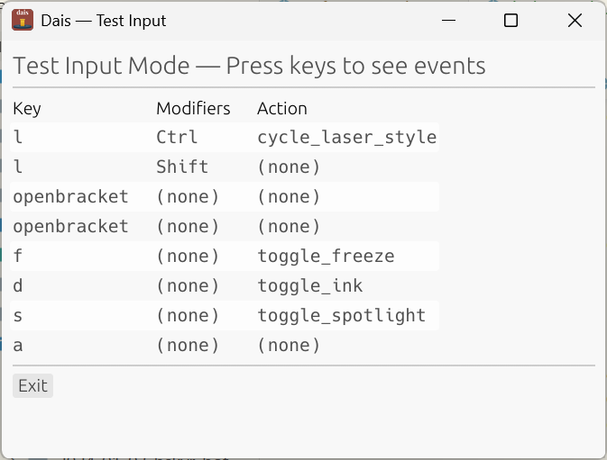
Then add a custom profile:
[clicker.profiles.my-remote]
PageDown = "next_slide"
PageUp = "previous_slide"
Escape = "toggle_blackout"Full references for configuration and keybindings are in the online docs.
Want to try it?
Install from crates.io with Cargo:
cargo install daisTo build the development version from GitHub:
cargo install --git https://github.com/christopherkenny/dais.git --package dais --bin daisGrab a pre-built binary from the GitHub Releases page if you’d rather not install Rust. I recommend just building it, as downloading a version tends to cause your local device security to yell.
Footnotes
You may know that I am not an expert in Rust and so much of this tool is vibe-coded. I started with a proposal document, several rounds of back-and-forth prompting until I had a proof-of-concept. Since then, I’ve been refining the interface and adding features, with hundreds of iterations of human testing.↩︎
Citation
@online{kenny2026,
author = {Kenny, Christopher T.},
title = {`Dais`: {A} Better Way to Present {PDF} Slides},
date = {2026-05-14},
url = {https://christophertkenny.com/posts/2026-05-14-introducing-dais/},
langid = {en}
}